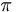

Antonio Sala
 De: La Frikipedia, la enciclopedia extremadamente seria.
De: La Frikipedia, la enciclopedia extremadamente seria.
Retrato robot, gentileza de un friky
Esta foto de un error ortográfico de Antonio Sala fué tomada por un alumno (un héroe diría yo) justo antes de caer fulminado ante su mirada infinita
«¿¿¡¡Pero en qué mundo estamos!!??»
~ Antonio Sala en clase de Cálculo
«Sigan ustedes con el pitorreo.»
~ Antonio Sala , una gran persona
«Oiga usted, sujeto.»
~ Antonio Sala ,temible frase utilizada por este personaje al comienzo de una sesion de tortura mental sobre un alumno
Antonio Sala, también conocido como 0492, es profesor de Calculo, Álgebra y demás sandeces en la acojonante ESI de Cádiz.
Cree firmemente que los yankis quieren someternos ideológicamente y culturalmente, Coca-Cola mediante, para dominar el mundo, e intenta salvar a sus pobres e ignorantes alumnos (más conocidos como "bachillerines") dándoles esta noticia TODOS los años, y siempre con las mismas palabras.
Otros datos sobre este inquietaaante personaje:
- Afirma que Kiss FM es la mejor cadena de radio.
- Cree que para que le de tiempo a viajar entre la fotones.
- Le dan fobia las abreviaturas de nombres como "Fco." "Fdez." y similares, siendo causa de suspenso.
- Nunca cierres una ventana en su presencia, aunque mueras de frío, él tiene calor y necesita aire, te arrancará el alma usando su poder de la mirada infinita.
- Insiste muchísimo en como se escribe .
- Escribe en la pizarra mientras que simultáneamente borra lo escrito con la barriga.
- Su frase favorita es: "Para todo epsilon positivo existe al menos un número natural alfa tal que ..."
- No es amigo de los ordenadores y las nuevas tecnologías. Solo usa el PC para poner el salvapantallas con fotos erótico-festivas de Nicole Kidman.
- Piensa que la calculadora es un esclavo electrónico.
- Afirma que es un "Ibérico Recalcitrante" y que está en peligro de extinción.
- Está totalmente en desacuerdo con el diseño de la nueva ESI de Puerto Real. Le inquietan las perchas que llegan al suelo, le asombra la idea de meter el 'papelito' para que funcione la luz en cada aula y, sobre todo, no encuentra explicación al hecho de que los módulos empiecen por la F y terminen en la A, alegando que los últimos módulos se encuentran ya "a la altura de los toruños".
Teorías y estudios de Antonio Sala
Sólo se tiene noticia de un descubrimiento importante realizado por este señor, pero es tan importante que físicos de todo el mundo intentan encubrirlo, pero aquí tendrán acceso a esta reveladora noticia:
Ha encontrado el punto exacto donde está el infinito. Como lo oyen. Y no está tan lejos como indica su nombre. El punto infinito se encuentra en la parte de atrás del aula 3 del Aulario Simón Bolivar, también llamada Lado Oscuro del Aula, donde las luces siempre están apagadas. Generoso él, comparte este dato con la siguiente frase:
—"[voz gangosa] Oigan ustedes, los que están allí en el infinito, enciendan las luces o vénganse hacia adelante [\voz gangosa]"
Ha descubierto también recientemente la "zona infrarroja de la pizarra" que comprende aquellas partes laterales que no ven los alumnos sentados en el lado opuesto.
Hechos sobre Antonio Sala
Así, es un hecho que...
- ... Antonio Sala es la única persona que, en un intento de resolver un ejercicio, en lugar de simplificarlo, lo complica hasta límites insospechados, usando sus técnicas para dominar el mundo.
- ... Antonio Sala prefiere al Grupo A, ya que entre sus alumnos hay genios de la aritmética capaces de usar los infinitésimos equivalentes en un intento de dominar el mundo.
- ... el sueño de Antonio Sala sería examinar a Carod Rovira, mediante un examen en catalán, su idioma favorito, sin lugar a dudas.
- ... hay alumnos que en un intento desesperado de no caer en la ignorancia, corrigieron a Antonio Sala. Ahora forman parte del hormigonado de la ESI.
- ... Antonio Sala apuesta por el avance multimedia, afirmando que pondrá las notas audiovisualmente, añadiendo sonidos escatológicos producidos por alumnos en sus clases.
- ... Antonio Sala denominó a uno de sus alumnos como el especializado en raíces. Así reza en su DNI desde entonces.
- ... Antonio Sala fue la única persona en el mundo capaz de darle una orden al BOFH Todopoderoso y que éste la acatase sin replicar.
- ... En el presente curso (2011-2012), Antonio Sala ha comenzado lo que podría ser una eterna guerra por el tiempo de clase contra Javier Holgado, profesor de Informática General B.
Teorías sobre su origen
Se barajan distintas hipótesis sobre su origen y nacimiento, si es que no existe desde el principio de todos los tiempos, claro, diciendo todos los años desde el Big-Bang exactamente los mismos chistes y comentarios
Antonio Sala odia a los palomos, dijo que deberían ser exterminados, a cuenta de que se cagan en las ventanas, y ademas tiene obsesión con el bachiller, cree que todo lo que él sabe se aprende en bachiller.
Las teorías más populares son:
- Antonio Sala no es más que una versión digievolucionada de Don Pimpón.
- Antonio Sala es una grabadora con patas y muy fea (por lo de decir siempre lo mismo).
- Antonio Sala es un ente alienígena que pretende comunicarnos sus conocimientos sobre cómo escribir los nombres.
- Antonio Sala es pariente de Darth Vader.
- Antonio Sala surgió como el lado aburrido de Sephiroth. Este descubrimiento se debe a su archiconocida mirada infinita: cuando ésta se extiende demasiado, comienza a escucharse "Estuans interius ira vehementi", en español "quemándose interiormente, con furia violenta", letra de la canción representativa de Sephiroth, One-winged Angel.
Otra teoría, menos popular y ya descartada tras numerosas pruebas empíricas, es que es un humano muy raro, pero, por raro que sea un humano, no puede ser Antonio Sala.
Recientemente, los investigadores de la universidad de Konectica, concrétamente de la sección de estudios "pitoteros y resplandores", llegaron a la conclusión empírica de que el objeto de estudio en cuestión se cartea comúnmente con un tal Gregorio House. Gregorio y Antonio perfeccionaron su humor tan característico realizando actuaciones en bares, tascas y diversas discotecas y locales de alterne para poder costearse la universidad y llevar a cabo sus estudios de la raza humana en un intento casi exitoso de dominar el mundo.
Este grupo también sostiene la teoría de que Antonio no es mas que un programa maquiavélico y malvado programado por el temible hombre que todo lo conoce, lease Antonio Gámez: "Creador del moodle y de la Tierra y todo lo visible e invisible", en ayuda de la simpática y amabilísima Eloisa Yrayzoz, profesora de programación como complemento en sus maligniosos intentos de dominar el mundo
Ultimamente se han producido distintos descubrimientos sobre los origenes de este ser tan carismatico, y es que unos informes y expedientes llegados desde norte america informan de que Antonio sala es una forma de vida aparecida en el periodo cretazico, y que fue evolucionando a la vez que lo hacian las matematicas. Esta teoria tambien afirma que fue creado por el propio planeta como medio de defensa frente al siniestro dominio de Bush.
Frases célebres
Mundialmente conocida, la obra retórica de Antonio Sala se amplía diariamente con frases que sus afortunados alumnos aciertan en recoger para la posteridad. He aquí un extracto de su obra:
Perlas matemáticas
- " es un viaje directo al suspenso cero. Es una herejía de las más gordas que lleva directamente a la hoguera."
- "Le recuerdo a los señores que el ejercicio no se va a resolver observándolo en meditación hindú. Habrá que pedirle a un Sacra licenciado en artes hindúes que os ayude."
- "(Calculando el número combinatorio cuya 'm' era 49) ¿Cómo que 49! (factorial de 49)? ¡¡¡Eso es una burrada enorme, al menos la distancia entre la Tierra y la estrella Alfa Centauro en centímetros!!! ¿Quién os ha enseñado tal estupidez?."
- "No acepto que nadie en un examen me separe los decimales con puntos y me ponga el seno de un ángulo con la palabra "sin". Yo utilizo un programa de la conferencia norteamericana de matemáticos para hacer los exámenes y empleo una macro para que aparezca la palabra "sen" en vez de "sin". Por si no lo recuerdan, ésto es España y aquí se habla español."
- "Apliquen ustedes esta deliciosa fórmula"
- "He aquí una de las consecuencias nefastas de la operación "sevá": ."
- "Un problema de matemáticas no se resuelve emitiendo fonemas."
- "Un ejercicio de éstos es como una selva virgen, y no se puede tomar una selva virgen sin brújula, como comprenderán..".
- "Éste es uno de los restos del naufragio anterior".(Antonio Sala tras ser preguntado por un problema,quedando parte del anterior en el encerado)
- "El binomio de Newton es tan bello como la Venus de Milo.Lo que hay es poca gente que se dé cuenta de ello". Original de Fernando Pessoa(Portugal)
- "...este numeraco tan inmenso como la distancia de la Tierra a la estrella Alfa Centauro no me importa ..."
- "Esta función podría ser una escultura moderna; veánse las esculturas del paseo de Canalejas, que parecen pesadillas de nuestra última gripe."
Política y sociedad
- "Voy a denunciar en la Audiencia Nacional a los colegios que dan tablas de derivadas falsas."
- "La cumbre del progresismo sería estar todo el día de pitorreo".
- "A ustedes lo que les pasa es que tienen una mala comprensión del lenguaje castellano... el próximo examen lo vamos a poner en catalán."
- "Selectividad es una comedieta tragicómica. Con este problema de aquí habrían aprobado el 1 por 1000 de los alumnos, y la mayoría se habría tirado por la ventana del edificio de medicina a la plaza del Falla, se habrían llamado a las fuerzas policiales..."
- "En el nuevo Bachiller Pugilístico, ahora no le dan a uno el título si no le ha pegado a su profesor previamente."
- "Aceptado Jaime Ostos como descubridor de América".
- Mientras daba clase pasó el típico coche del circo dando bocinazos: "¡¡Lo que daría yo para que estuviese aquí el francotirador de Estados Unidos y pegara más de un tiro!!"
- "Cuando salen esos programas televisivos de cultura general, deberían preguntar la definición del número e"
Física
- "Cuanto menos bulto, más claridad."
- "Tienen ustedes un aburrimiento de 3000 atmósferas."
- "Bueno, ¿ven desde estas alturas cataléticas? En este espacio entre la oscuridad y la distancia focal si logran ver la pizarra, en el caso de que no les vaya bien la carrera, al menos tendrán la puntería de un experto piloto de combate con una fantástica retina... eso si sobreviven a esta prueba en este sitio, el Reinado de las Sombras""
Cine y actividades de ocio
- "La pizarra en CinemaScope no está mal, tiene un formato panorámico."
- "Señores alumnos, la clase no es una sesión de cine continuo."
- "Señores, a ver si se termina ya la tertulieta"
- "Señores, les recuerdo que saliendo a la derecha se encuentra la maravillosa Alameda Apodaca, recomendable para la tertulia de la hora de cálculo"
- "¿Cómo me voy a perder la llegada de los marcianos a la tierra? ¡¡Tengo que tener la televisión encendida para verlo!!".
Pedagogía
- "Señores, si no os agrada la carrera plantearos que esto no es lo vuestro y dedicaros a otras cosas como la animación sociocultural; porque en vuestro lugar, hay ciertas carreras que yo no me metería ni aunque la Guardia Civil me llevara obligado y esposado... bueno esposado si iría."
- "La idea es fácil, pero no queda clara hasta que uno no se la penetra..."
- "Algunos individuos piensan que venir a clase es como un jardín de infancia, llegan por la mañana, se pasean por sus aulas, y salen a la dos de la tarde, así sin más... como de costumbre".
- "Soy un verdugo muy educado."
- "Si alguien no está preparado para la universidad y tiene una edad mental de 5 años, yo le busco un jardín de infancia. No se preocupen, con este ordenador con wifi podemos buscar en páginas amarillas: "Jardín de Infancia"."
- "Esto es el colmo del infantilismo agudo".
- "Hay determinadas carreras que ni la Guardia Civil conseguriía que asistiese a ellas. Bueno, tal vez esposado harían que atendiera a alguna clase".
- "Los palomos también lo han entendido y contestan a su modo".
- "Deje de golpear y derive, que ya verá como sobrevive a esta sesión de tortura. Yo soy un verdugo amable porque nunca llego a matar a la víctima para que pueda volver a otra sesión de tortura y aburrimiento intensivos. Soy "El Verdugo Amable".
- "El Cálculo es un fruto de pesada digestión: no se puede uno dar el atracón el día antes.".
Gastronomía y meteorología
- "Dar clases a las dos de la tarde incita el canibalismo"
- "Bueno, vámonos ya que tengo que nutrirme...".
- "Tengan ustedes cuidado con el boli, no se vayan a atragantar".
- "Ya que persiste este calor tropical vamos a salir cinco minutos antes".
- "Hoy, debido al monstruoso huracán que hay, no voy a explicar nada nuevo".
- "Si quieren suspender rápidamente, vayan ustedes a los exámenes sin desayunar, a ver si les da un vaído".
- "Dejen de rumiar chicle americano"
Facultad
- "Este aula está sumida en la penumbra... bueno, bienvenidos al aula del terror...".
- "En estos casos necesitaría un enano que escribiera por aquí abajo, y que tuviera una plataforma que lo elevara".
- "La DAUC (Delegación de Alumnos de la UCA) no es una sección de la CIA."
- "Debe haber copias de los profesores, que dan clase en los otros 1ºD's, los replicantes".
- "Yo sabía que iba a tener que borrar la pizarra, pero no que iba a hacer gimnasia".
Historia
- Antonio Sala: —"¿No habéis dado trigonometría?"
- Alumno1:—"En primero de Bachiller..."
- Alumno2:—"¡No! En segundo.."
- Alumno1:—"En primero..."
- Antonio Sala:—"Esto en el siglo XIX hubiese terminado a un duelo a espada. El motivo: trigonometría"
Zoología
- "La ornitología es una ciencia fascinante. Algunos profesores están estudiando ornitología porque hay unos pájaros entre sus alumnos. Algunos podrían irse volando al parqué Genovés con sus amigas las palomas.
- "Se acepta pulpo como animal de compañía".
- "Aplicar la regla de L`Hopitâl a este polinomio es como sacar un cañon para matar un canario".
Ortografía
- "in-finito (lo escribe en la pizarra y circunscribe el prefijo). Recuerden los señores que este prefijo indica negación, in finito, que no tiene fin".
Antonio y sus alumnos
- "Mis queridos niños de San Rafael...".
- "Los viejecitos de dieciocho años están hechos polvo, los pobrecitos, dando lameeentos...".
- "La gente parece que está programada, tienen un gen que les impulsa a estar hablando.".
- "Y dale con las gracietas hombre... ¡¡Déjense ya de gracietas y váyanse a la porra!!".
- "Oiga usted, intrépido alumno ¿puede proceder a callarse la boca y acto seguido realizar el ejercicio?".
- "Dos de cada 5 alumnos abandona la carrera, ¡Esto es vergonzoso! (entre risas). Si no les gusta venir a clase que se apunten para sacarla desde casa, aquí nos reiriamos muchísimo más de uno... Me imagino a un médico que saque el título de esta forma, solo habrá visto a un paciente por fotos... Cuando a mi me toque un asesino de éstos yo directamente es que me exilio al país más cercano, me exilio directamente... mejor que le den trabajo en un asilo y ayuden a los pobres ancianos a pasar a mejor vida, quedaría el asilo desierto en un mes... que pensándolo friamente no es mala idea... voy a proponer ésta idea en el SAS".
- "Pueden meterse en memos sin fronteras, que ahora hay muchos sitios sin fronteras donde pueden estar distraiditos sin molestar.
- "(Un reloj suena marcando la hora en punto) "Habría que ponerle mala nota a ese molesto alumno. Ha lanzado una intrépida indirecta que yo he captado, pero todavía no es la hora. Un alumno que no sepa poner en hora su reloj, mal asunto!".
- "Ojo, que algunas personas hacen testamento antes de enfrentarse a ecuaciones de segundo grado como esta, y esque algunos han muerto haciendo ecuaciones."
- "Sigan, sigan....sigan riendo a mandíbula batiente mientras yo contemplo impávido."
- "(Un alumno le ofrece probar Doritos) Yo no ingiero ese tipo de alimentos elaborados mediante pasta centrifugada."
- "(Se oye una radio de los trabajadores de una obra cercana) Estamos en aulaolé."
- "(Alumnos fumando en el pasillo)Pueden fumar en el aula, está igualmente prohibido."
- "Si uno es un espiritu frivolo.."
- "Esta asignatura es más importante que las de 3º porque las precede en el orden lógico."
- "Si no hay puente felicito a los alumnos de la escuela, por fín no hay un acueducto."
Primer examen de Cálculo: al límite del suicidio colectivo
Durante el primer parcial de cálculo del año 2006-2007 ocurrío algo de eso que pasará a la historia de la ESI. Justo al principio del exámen un alumno al fondo de la clase alzó la mano:
—Profesor ¿podría proporcionarme una chincheta del corcho?.
—¡Una chincheta!, ¿para qué?. (Antonio, con cara de pensar que el mundo va cada vez peor).
—Es que mi calculadora está chunga y tengo que darle al reset después de algunos cálculos.
—Esto es lo último que tenía que escuchar ¡Calculadoras accionadas por chinchetas! ¡Esto es tecnología punta! Bien saca la chincheta.
—No, no tengo, ¿podría proporcionarme una de aquel corcho?. (señalando el corcho de la clase)
—Sí, toma.
—Muchas gracias.
—De nada.
- (Después del examen)
—A ver si la próxima vez trae usted su propia chincheta.
—La iba a coger al entrar pero se me se me olvidó. Pero la próxima vez me compraré una calculadora nueva.
En el Examen final de Cálculo 29 de Enero del 2007
Antonio no se deja intimidar por la solemnidad del momento y siempre intenta arrancar una sonrisa en sus alumnos para animarlos durante el examen con detalles como este:
—El que no ponga el grupo al que pertenece tendrá un -1 en el examen...
25 Aniversario IES Rafael Alberti: de como Antonio fue profesor
En el 25 Aniversario del IES Rafael Alberti, del que Antonio formaba parte del profesorado, un alumno suyo de universidad, que desconocía por completo la faceta Bachillerina, se acerca a saludarlo (copa en mano) y le espeta a Antonio en tono humorístico:
—Hola Antonio! no sabía que Ud. fuese alumno del Alberti. Yo estoy aquí porque fui profesor (Nótese la mentira cochina).
—Yo tampoco recuerdo que fuese profesor mío. ¿De que promoción era Ud.? (Antonio continúa con la broma).
—Del 79.
—Ah!! Ya decía yo que me sonaba su tez blanquecina, como el fundador del Instituto..
Descubrimiento increible
Aunque parezca algo incierto y completamente inverosímil, nuestro querido y amado profesor tiene una doble vida secreta. En su intento por dominar el mundo, Antonio ha creado una empresa con su propio nombre para actuar sobre todo el mundo y poder conseguir adeptos para su causa, a parte de ganarse un sobresueldo mas para seguir comprando jerseys verdes y azules, logrando así mantener su aspecto clásico, elegante y temible. La pagina en cuestión es http://www.antoniosala.com/, si no lo creeis entrad y descubrir el poder de este glamuroso ser.
Autor(es):
- Nexo
- La patata española
- Mr.Bean
- Bachillerín
- TheOm3ga
- Tupac Shakur1971
- Busto
- Friki
- Frikiman
- Gaguen
Frikipedia 2005-2016, Licencia
GFDL 1.2 - Extraído por FrikiLeaks